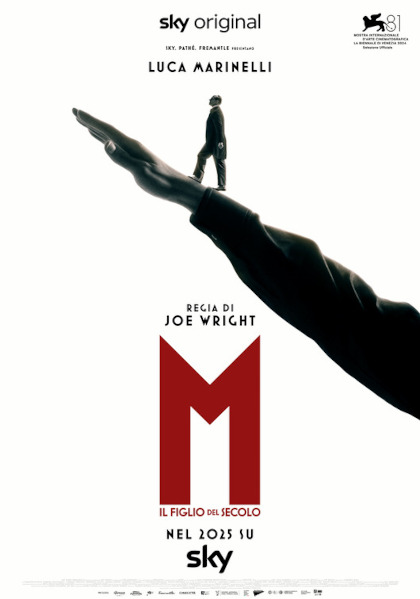

Incontro con Alessandro Barbero
Il giorno 20 gennaio si è tenuto presso il Teatro Lirico un incontro con il professor Alessandro Barbero riguardante gli anni del fascismi in Italia, per poi finire con la visione della prima puntata della serie “M. Il figlio del secolo”, che parla dell’ascesa di Mussolini al potere.
Si è fatta prima un’introduzione sulla vita di Mussolini, soprattutto durante la prima guerra mondiale, e il suo rapporto con D’Annunzio.
Il professore ha parlato dell’avvento del fascismo, raccontando che il gruppo dei fasci di combattimento era nato in un piccolo teatro, e che man mano aveva acquistato potere grazie alla forza e alla violenza, per poi finire con l’ascesa del fascismo, che ebbe tante morti, tra cui la più importante fu l’omicidio di Matteotti.
Ciò che ho apprezzato maggiormente è stato il fatto che Barbero sia riuscito a spiegare i concetti in modo molto scorrevole e semplice, in modo da farsi capire bene da tutti.
Inoltre, il professore ha pure chiarito ed esplicato alcune etimologie, come “duce”, che veniva usato anche per denominare Garibaldi, e “fascismo”, che veniva dai fasci che venivano usati per legare insieme dei pezzi di legno, per costruire delle armi.
m. il figlio del secolo
La serie è un adattamento al romanzo storico scritto da Antonio Scurati, che narra l'ascesa al potere di Benito Mussolini. Contrariamente alle mie aspettative, cioè una serie piatta che parla della vita di mussolini e del fascismo, il primo episodio mi è piaciuto molto. è stato molto coinvolgente, mi è piaciuta soprattutto l’introduzione, perché il gioco tra luci e ombre, gli effetti sonori e visivi, e le parole dette da mussolini mi hanno suscitato un senso di inquietudine, quasi di terrore.
Inoltre, apprezzo il fatto che abbiano fatto vedere anche scene violente per far capire quanta crudeltà c’era.
La bravura dell’attore è strepitosa, mi è piaciuto molto come ha recitato; in più, ha fatto capire come Mussolini fosse un grande bugiardo, che modificava la realtà per avere un vantaggio personale.
Per quanto riguarda i suoi seguaci, invece, va anche detto che è ammirevole come M. riuscisse a scuotere gli animi dei suoi sottoposti e a far fare loro ciò che voleva, e tutto questo grazie alla sua capacità di parlare in pubblico, alla sua retorica. Egli riusciva a farli sentire parte di qualcosa, perché era di questo che avevano bisogno, una comunità, dato che erano stati emarginati dalla società dopo la prima guerra mondiale. La chiave è la sua abilità nell’includerli in quello che diceva, parlando con il plurale, facendo riferimento al “noi”.
D’altronde, come è stato citato nella serie, lui aveva solo loro e loro avevano solo lui.